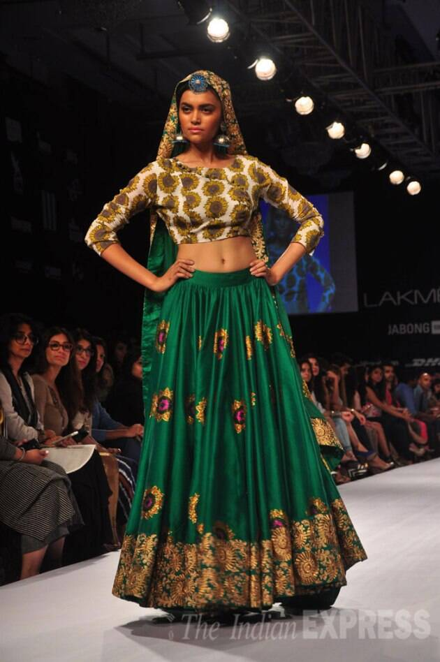

Traditonal attires are mostly known for their cultural and traditional reflection of values and customs. Involving variety of subtle colors,patterns they are mostly known for their textures involving cotton; Fabric is their major concern,as it gives both comfort and authenticity
Comfort and style are the two major aspects that were given importance in the day 1 of fashion week. it all started with designer showcasing all the patterns and attires with fashion deligates sitting in the front row and cheering up the models all the beautiful neutral colors with the best comfortable fabric is shown with different design and outfits. The showstopper and designer closed the day 1 of fashion week with his best dress designed being adorably worn by the showstopper in the end If Comfort of clothing is given importance it is basically showup as confidence. "GO GIRL"
Traditional
"Attires with traditional touch adds authenticity to the clothing and such clothing reflects culture and traditions "